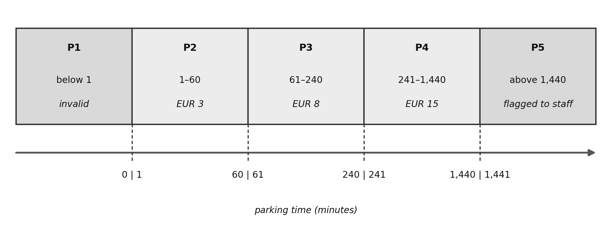
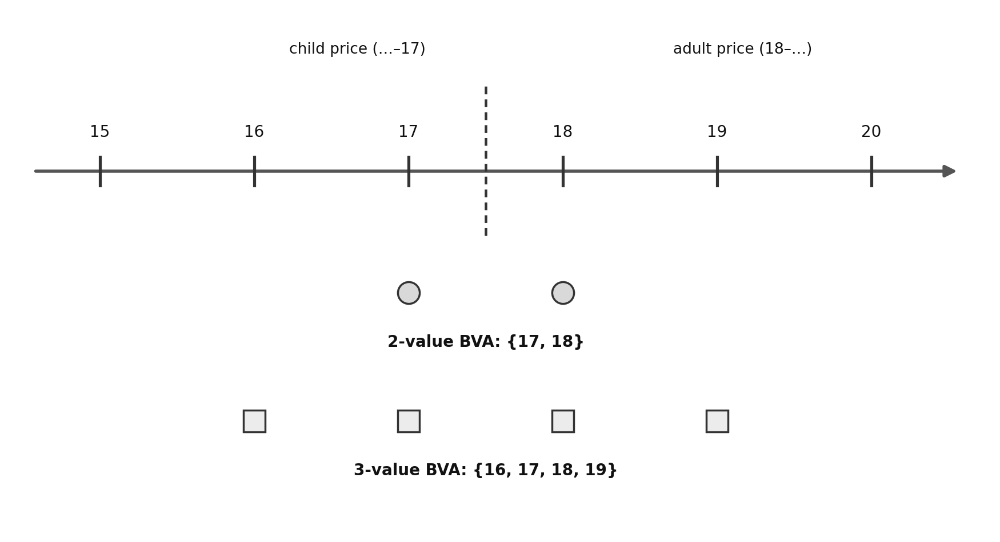
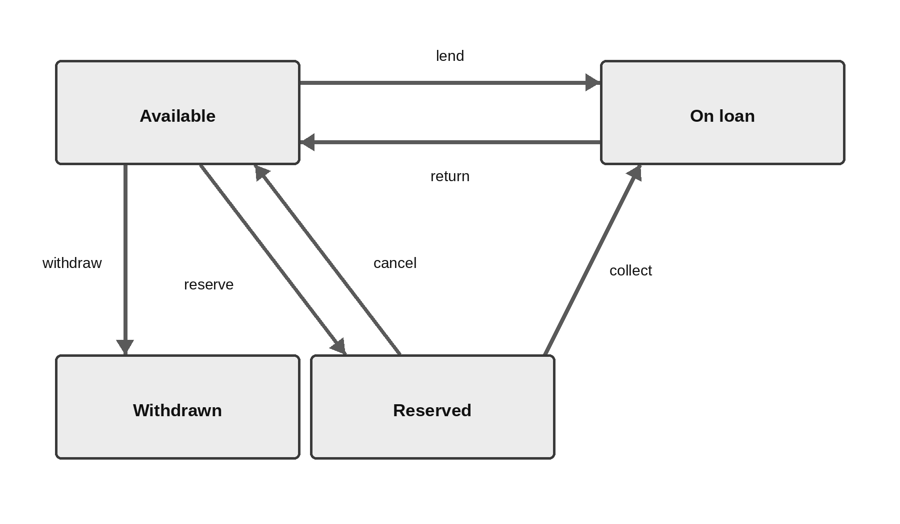
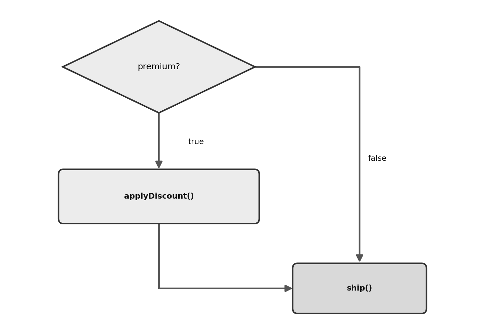
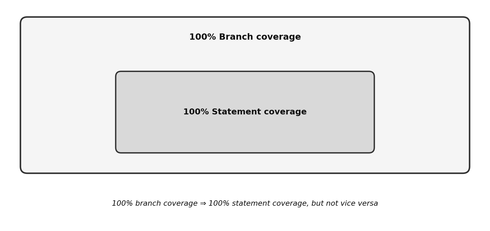
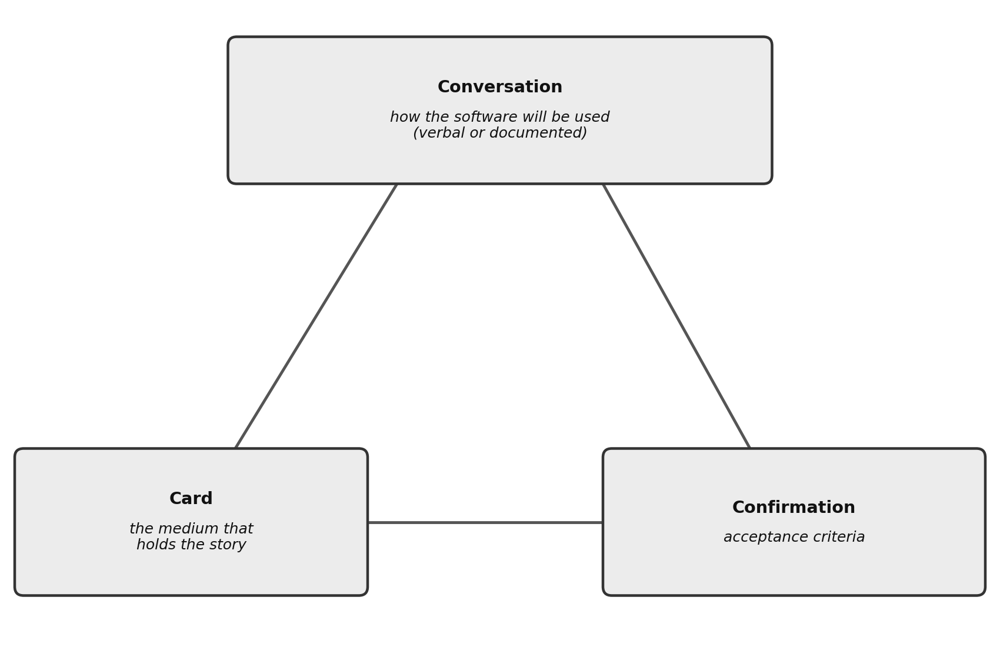
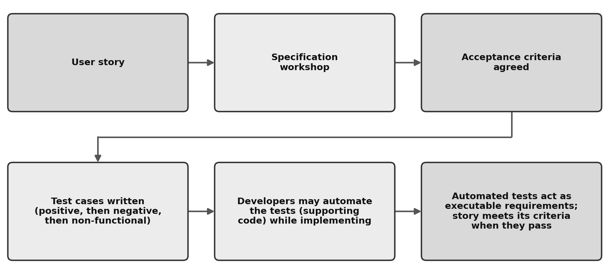

Chapter 4 — Test Analysis and Design
Learning objectives: 14 · K1 0 / K2 9 / K3 5 · Exam questions from this chapter: 11
Keywords: acceptance criteria, acceptance test-driven development, black-box test technique, boundary value analysis, branch coverage, checklist-based testing, collaboration-based test approach, coverage, coverage item, decision table testing, equivalence partitioning, error guessing, experience-based test technique, exploratory testing, state transition testing, statement coverage, test technique, white-box test technique
This chapter carries the highest exam weight, and five of its questions are at K3 level: you are asked not only to recognise the techniques but to apply them. A reliable way to prepare is also a simple one: solve every example here with pen and paper, then do the independent exercises on your own before looking at the solutions. The formulas may look intimidating at first. But each technique follows a small, repeatable procedure, and after you apply it two or three times yourself, the exam questions follow the same few patterns.
4.1 Overview of Test Techniques (FL-4.1.1 — K2)
A test technique is a structured way of deriving test conditions, coverage items, and test cases from the test basis, rather than making tests up at random. Techniques support both test analysis (what to test) and test design (how to test). The syllabus organises them into three classes. Black-box (specification-based) techniques derive tests from the documented, specified behaviour, requirements, stories, and models, without knowledge of the internal structure; coverage is measured against items of the test basis, such as equivalence partitions, boundaries, table columns, and transitions. White-box (structure-based) techniques derive tests from the system’s internal structure, code and architecture; coverage is measured against the structural elements executed, such as statements and branches. Experience-based techniques derive tests from the tester’s knowledge and experience of the application, likely defects, and users; their effectiveness depends heavily on the tester’s skills. Figure 4.1 shows the three classes and the techniques this syllabus places in each.
![Figure 4.1 — The three classes of test techniques and the techniques in each. A tree starts from a box labelled “Test techniques” and branches into three boxes. Black-box, derived from specified behaviour, lists equivalence partitioning, boundary value analysis, decision table testing, and state transition testing. White-box, derived from internal structure, lists statement testing and branch testing. Experience-based, derived from tester knowledge, lists error guessing, exploratory testing, and checklist-based testing.](figures/fig_4_1_technique_classes.png)
These definitions have a practical consequence. As long as the required behaviour stays the same, black-box tests often remain useful even if the implementation changes, because they were never tied to the code. White-box tests depend on how the software is designed, so they cannot be written until the design or the implementation exists, and they need revisiting when the code changes. Experience-based techniques can find defects the systematic techniques may miss, but their effectiveness depends heavily on the tester’s skills, so they complement the other techniques rather than replace them.
A note on the word coverage, which this chapter uses constantly: coverage is the number of coverage items executed divided by the total number of coverage items, expressed as a percentage. Each technique defines its own coverage item: an equivalence partition, a boundary value (and, in 3-value BVA, its neighbours), a table column, a state or a transition, a statement, a branch.
When a scenario asks which technique fits, the wording of the test basis usually points to the answer. Value ranges handled the same way point to equivalence partitioning. Behaviour that changes at the edges of ordered ranges points to boundary value analysis. Results that depend on combinations of conditions point to decision table testing. Behaviour that depends on the current state and what came before points to state transition testing. The structure of the code itself points to statement and branch testing. Knowledge of past failures and likely defects points to error guessing. Weak specifications or serious time pressure point to exploratory testing. A list of test conditions built from experience, used where there are no detailed test cases, points to checklist-based testing. And a user story with agreed acceptance criteria points to ATDD. Table 4.1 collects these signals in one place for revision.
Table 4.1 — What the test basis gives you, and which technique fits
| What the test basis gives you | Technique or approach that fits |
|---|---|
| Value ranges the system handles the same way | Equivalence partitioning |
| Behaviour that changes at the edges of ordered ranges | Boundary value analysis |
| Results that depend on combinations of conditions | Decision table testing |
| Behaviour that depends on the current state and what came before | State transition testing |
| The structure of the code itself | Statement testing and branch testing |
| Knowledge of past failures and likely defects | Error guessing |
| Few or inadequate specifications, or serious time pressure | Exploratory testing |
| A list of conditions built from experience, in place of detailed test cases | Checklist-based testing |
| A user story with agreed acceptance criteria | ATDD |
Exam focus. This is a classification question: you are given a description of how tests are derived and asked to name the class. The distinction is simple. Deriving from a specification is black-box; deriving from code or structure is white-box; deriving from the tester’s knowledge is experience-based. A common trap is classifying exploratory testing as black-box; it is experience-based.
Check your understanding
CYU 4.1.1-a. A team derives tests only from documented requirements, without looking inside the code. Which technique class is this?
- (a) Black-box (specification-based)
- (b) White-box (structure-based)
- (c) Experience-based
- (d) Collaboration-based
Show answer
Answer: (a). Deriving from specified behaviour without knowledge of the internal structure is black-box.
CYU 4.1.1-b. Which class does exploratory testing belong to?
- (a) Black-box
- (b) White-box
- (c) Experience-based
- (d) Collaboration-based
Show answer
Answer: (c). Exploratory testing is an experience-based technique; a common trap is to take it for black-box.
CYU 4.1.1-c. When the required behaviour stays the same, which tests often remain useful even if the code changes?
- (a) White-box tests
- (b) Tests designed to cover every branch
- (c) Black-box tests
- (d) Tests designed from the current control-flow graph
Show answer
Answer: (c). Black-box tests are not tied to the code, so they stay useful when behaviour is fixed and the code changes; white-box tests are tied to the structure.
4.2 Black-box Test Techniques
Equivalence partitioning (FL-4.2.1 — K3)
The idea. Equivalence partitioning (EP) divides the data of the test object into equivalence partitions (equivalence classes): sets of values the system is expected to process the same way. If the system really does treat every member of a partition alike, testing one value from each partition is enough, because any member exercises the partition as well as any other.
An everyday comparison helps. Think of a catering firm feeding a thousand-person organisation. Health inspectors do not collect hundreds of plates from the hall and send them to a lab. Every plate of rice cooked in the same pot has, from the system’s point of view, been through the same “production process.” Instead, one retained sample is taken from each batch. A single sample from the roast-chicken pot represents the state of every portion out of that pot. Those batches (pots) are the equivalence partitions; those single samples set aside for the lab are our test cases.
The rules to apply are these. Any data element tied to the test object can yield partitions: inputs, outputs, configuration items, internal values, time-related values, interface parameters. A partition containing valid values is a valid partition; one containing invalid values is an invalid partition. What counts as valid can vary between teams, and invalid partitions deserve their own tests. A partition set can be continuous or discrete, ordered or unordered, finite or infinite. Partitions must not overlap and must be non-empty. For one set of partitions, EP coverage requires each identified partition to be exercised at least once; coverage equals partitions exercised divided by total partitions. When a test item has multiple sets of partitions, the simplest criterion is Each Choice coverage, which requires every partition from every set to be exercised at least once but does not require all combinations. For a single data element, the minimum number of test cases for 100 percent EP coverage equals the number of partitions.
When several data elements each have partitions, one test case can in principle cover one partition from each element at the same time. In practice invalid values are usually tested separately, so a failure can be tied clearly to one cause and one defect cannot mask another. Exam questions do use more than one data element. Under Each Choice coverage with freely combinable partitions, the minimum number of test cases equals the largest number of partitions in any one set; constraints between inputs, or testing invalid partitions one at a time, can raise it.
Worked example — parking hourly rate
A car park charges by total parking time: up to 1 hour, EUR 3; more than 1 hour up to 4 hours, EUR 8; more than 4 hours up to 24 hours, EUR 15. Parking longer than 24 hours is not allowed (the barrier system flags these to staff). The input is the parking time in minutes (an integer, at least 1).
Task: derive the partitions and the minimum test cases for 100 percent EP coverage.
Step 1, find the behavioural break points. The charge changes after minute 60, after minute 240, and after minute 1,440. Values below 1 minute are invalid input for this field.
Step 2, list the partitions. There are five: [below 1, invalid], [1 to 60], [61 to 240], [241 to 1,440], [above 1,440, flagged to staff]. Figure 4.2 shows them on a number line, with the break points between neighbouring partitions.

Step 3, pick one representative from each partition. Any member works; mid-range values are conventional:
| Test case | Input (min) | Partition | Expected result |
|---|---|---|---|
| TC1 | 0 | P1 | input rejected |
| TC2 | 30 | P2 | EUR 3 |
| TC3 | 150 | P3 | EUR 8 |
| TC4 | 600 | P4 | EUR 15 |
| TC5 | 2000 | P5 | flagged to staff |
Answer: five partitions, so a minimum of five test cases for 100 percent EP coverage. If only TC2 to TC4 were run, coverage would be 3/5 = 60 percent.
Exam focus. K3 questions come in predictable shapes: how many partitions, the minimum number of test cases, which value belongs to which partition, and what coverage a given test set achieves. An easy mistake is forgetting the invalid partitions, counting three here instead of five. The second most common is adding boundary neighbours as extra partitions; boundaries are the next technique’s job, not this one.
Independent exercise 4.A
A museum sells tickets by visitor age (an integer, 0 to 120): ages 0 to 5 enter free; 6 to 17 pay the child rate; 18 to 64 pay the adult rate; 65 to 120 pay the reduced (senior) rate. Ages outside 0 to 120 are rejected. (a) List the partitions. (b) What is the minimum number of test cases for 100 percent EP coverage? (Solution at the end of this chapter.)
Check your understanding. The real practice for this K3 objective is the worked example above and exercise 4.A; the single question below only fixes the basic rule.
CYU 4.2.1. Which statement about equivalence partitions is correct?
- (a) A value may belong to two partitions if both rules apply to it
- (b) Partitions must not overlap or be empty, and invalid partitions are exercised like valid ones
- (c) Only valid partitions count towards EP coverage
- (d) Each partition must be tested at its minimum and its maximum
Show answer
Answer: (b). Partitions must be non-empty and must not overlap, and EP coverage counts invalid partitions as well as valid ones. Option (c) forgets the invalid partitions, and option (d) describes boundary value analysis.
Boundary value analysis (FL-4.2.2 — K3)
The idea. Many defects occur at the edges of ranges. When a developer writes < instead of <=, every mid-range value behaves correctly and only the boundary misbehaves. Boundary value analysis (BVA) therefore extends EP by testing the boundaries of ordered partitions, the minimum and maximum values of each partition. BVA applies only where the partitions are ordered (numeric or sequential); an unordered set like {red, green, blue} has no boundary to test.
A real-world parallel: if a bridge has a 10-tonne weight limit, you learn little by driving a 5-tonne truck across it. The informative tests are at the limit, 9.9 tonnes, 10.0 tonnes, 10.1 tonnes, because that is exactly where the rule, and the code that enforces it, might be wrong.
There are two variants, and the exam expects you to apply both. In 2-value BVA, for each boundary value, test the boundary value itself and its nearest neighbour in the adjacent partition. In 3-value BVA, for each boundary value, test the boundary value and both of its neighbours, the neighbour in the same partition and the neighbour in the adjacent partition. This is more thorough; for example, it can catch a boundary check written as == by mistake instead of >=, which 2-value BVA might miss.
Worked example — the museum’s child/adult boundary
Take a slice of the museum rule above: ages 6 to 17 pay the child rate; ages 18 to 64 pay the adult rate. Focus on the single boundary between the child and adult partitions.
Task: list the values that 2-value and 3-value BVA test at this boundary.
Step 1, identify the boundary pair. The maximum of the child partition is 17, and the minimum of the adult partition is 18. The point to notice: there are two boundary values between two adjacent partitions, not one, 17 and 18, each the edge of its own partition. Figure 4.3 shows which values each variant tests at this boundary.

Step 2, apply 2-value BVA. Each boundary value plus its nearest neighbour in the adjacent partition: for 17 that neighbour is 18, and for 18 it is 17. Result: {17, 18}, two test values for this boundary.
Step 3, apply 3-value BVA. Each boundary value plus both of its neighbours: 17 gives {16, 17, 18}; 18 gives {17, 18, 19}. The union is {16, 17, 18, 19}, four test values.
Full-element counts, which “minimum number of test cases” questions need: for the full museum input with partitions [below 0 invalid] [0 to 5] [6 to 17] [18 to 64] [65 to 120] [above 120 invalid], 2-value BVA tests each partition’s minimum and maximum plus the nearest neighbour across each boundary: −1, 0, 5, 6, 17, 18, 64, 65, 120, 121, which is 10 values. Each value is a coverage item; running 7 of the 10 gives 70 percent coverage. With 3-value BVA, each of the five boundaries contributes four values: −2, −1, 0, 1, 4, 5, 6, 7, 16, 17, 18, 19, 63, 64, 65, 66, 119, 120, 121, 122, which is 20 values. Note that the boundary values of the invalid partitions (−1 and 121) also get both of their neighbours.
Exam focus. The two highest-frequency questions are “which values does 2-value (or 3-value) BVA require here?” and “what is the minimum number of test cases for 100 percent coverage?” The usual mistakes are off-by-one values, forgetting that adjacent partitions contribute two boundary values rather than one, and confusing which variant includes the inner neighbour. A quick check: at a single boundary between two partitions, 2-value BVA needs exactly 2 values and 3-value BVA needs exactly 4.
Independent exercise 4.B
A thermostat accepts target temperatures from 5°C to 30°C inclusive (integer). Values outside the range are rejected. (a) Which values does 2-value BVA require, and (b) which values does 3-value BVA require? (Solution at the end of this chapter.)
Check your understanding. The practice is the worked example above plus 4.B; the single question fixes the distinction.
CYU 4.2.2. At a single boundary between two partitions, how many values do 2-value and 3-value BVA require?
- (a) 2-value 1 value; 3-value 2 values
- (b) Both 3 values
- (c) 2-value 4 values; 3-value 2 values
- (d) 2-value 2 values; 3-value 4 values
Show answer
Answer: (d). At a single boundary, 2-value requires exactly 2 and 3-value requires exactly 4.
Decision table testing (FL-4.2.3 — K3)
The idea. When behaviour depends on combinations of conditions, business rules, EP and BVA are not enough, because they handle data elements one at a time. A decision table lists the conditions as rows at the top, the resulting actions as rows at the bottom, and each column as a rule: a unique combination of condition values and the actions it triggers.
The mechanics to apply are these. In a limited-entry table with n independent Boolean conditions, the full table has 2^n columns, one for every combination, which guarantees completeness. In extended-entry tables a condition can take several values, such as ranges or partitions; the full table then has the product of the numbers of values as its column count (a condition with four delivery zones and one Boolean condition give 4 × 2 = 8 columns). For notation, conditions take T/F (or 1/0); in collapsed tables a dash means the condition is irrelevant for that rule; actions take X (do) or blank; N/A marks a condition that is infeasible in a rule. Tables can be simplified by deleting columns with infeasible combinations, and minimised (collapsed) by merging columns whose differing conditions do not affect the outcome. The general rule: if two columns produce exactly the same actions and differ in only one condition, that condition does not affect the result, so merge the columns and mark the condition with a dash. Collapsing preserves the intended behaviour; it only removes distinctions that do not change the outcome. Impossible combinations can also be removed. The coverage item is the column. Coverage equals columns exercised divided by total columns; the minimum number of test cases for 100 percent coverage equals the number of feasible columns. A side benefit: building the table exposes gaps and contradictions in the specification, combinations no one defined.
Worked example — gym membership discount
A gym gives a discount on the monthly fee by these rules: members with an annual contract who attend at least 8 times a month get a 20 percent discount. Members with an annual contract who attend fewer than 8 times get a 10 percent discount. Members without an annual contract get no discount, unless they are a corporate-partner employee, in which case they always get 10 percent regardless of attendance. Discounts do not stack; the single largest discount applies.
Conditions: C1 annual contract (T/F), C2 at least 8 visits a month (T/F), C3 corporate-partner employee (T/F).
Task: build the full decision table, collapse it, and state the minimum number of test cases for each version.
Step 1, size the table. Three Boolean conditions give 2^3 = 8 columns.
Step 2, fill in the full table.
| R1 | R2 | R3 | R4 | R5 | R6 | R7 | R8 | |
|---|---|---|---|---|---|---|---|---|
| C1 annual contract | T | T | T | T | F | F | F | F |
| C2 at least 8 visits | T | T | F | F | T | T | F | F |
| C3 corporate partner | T | F | T | F | T | F | T | F |
| A1: 20% discount | X | X | ||||||
| A2: 10% discount | X | X | X | X | ||||
| A3: no discount | X | X |
Read the interesting columns. In R1 the member meets both the 20 percent annual rule and the 10 percent corporate rule, and the single largest discount applies, so the result is 20 percent. In R3 both applicable rules point to 10 percent. In R5 and R7 there is no contract but the member is corporate, so 10 percent applies regardless of attendance.
Step 3, collapse the table. Apply the general rule pair by pair. R1 and R2 produce the same action and differ only in C3, so C3 is irrelevant there. The same holds for R3 and R4. On the no-contract side, R5 and R7 differ only in C2, and R6 and R8 differ only in C2. Four merges give four columns:
| M1 (R1+R2) | M2 (R3+R4) | M3 (R5+R7) | M4 (R6+R8) | |
|---|---|---|---|---|
| C1 annual contract | T | T | F | F |
| C2 at least 8 visits | T | F | – | – |
| C3 corporate partner | – | – | T | F |
| A1: 20% discount | X | |||
| A2: 10% discount | X | X | ||
| A3: no discount | X |
The collapsed table makes the business rule easy to read: with a contract, attendance decides between 20 percent and 10 percent; without a contract, the corporate flag decides between 10 percent and nothing.
Step 4, read the answers. Full table: 8 feasible columns, so a minimum of 8 test cases for 100 percent coverage of the full table. Collapsed table: 4 columns, so a minimum of 4 test cases.
Exam focus. Four question shapes recur: how many columns the full table has (2^n for a limited-entry table); what happens in this specific case (read one column); which rule is missing or contradictory; and how many test cases the collapsed table requires. Keep two cautions in mind. First, do not confuse the number of conditions with the number of columns. Second, before you start counting, be sure which version of the table the question asks about, full or collapsed. The dash means irrelevant, not wrong.
Independent exercise 4.C
An online store gives free shipping if the order total is at least EUR 50 or the customer is a Plus member, but never to addresses outside the country; those always pay shipping. Conditions: total at least EUR 50 (T/F), Plus member (T/F), domestic address (T/F). (a) Build the full decision table and fill in the action for every column. (b) Collapse the table, and state the minimum number of test cases for 100 percent coverage of the full table and of the collapsed table. (c) Write one concrete test case, with input values and expected result, for each column of the collapsed table. (Solution at the end of this chapter.)
Check your understanding. The practice is the worked example plus 4.C.
CYU 4.2.3. How many columns are in the full decision table of a rule with 4 independent Boolean conditions?
- (a) 4
- (b) 8
- (c) 16
- (d) 32
Show answer
Answer: (c). The full table has 2^n columns; 2^4 = 16. (Do not confuse the number of conditions with the number of columns.)
State transition testing (FL-4.2.4 — K3)
The idea. Some systems respond to the same event differently depending on their state, on what came before. In a music app, pressing “play” does different things if the song is paused, already playing, or not loaded at all. A state diagram models this: the nodes are states, the arrows are transitions, and each arrow is labelled with the triggering event. The full label syntax is “event [guard condition] / action”: a guard condition must be true for the transition to fire, and an action is what the system does during it; both are left out when they do not exist or do not matter to the tester. In the state table, the columns are events (with guard conditions, if any), and each valid cell holds the target state and any action. The equivalent state table lists every state-event pair, including the invalid pairs the diagram does not show. That is exactly why the table form matters: only the table shows, systematically, what should not happen.
The coverage criteria to apply: all states coverage means each state is exercised at least once; coverage equals states exercised divided by total states. It is the weaker criterion and can be met while many transitions go untested. Valid transitions coverage (also called 0-switch coverage) means each valid transition is exercised at least once; coverage equals valid transitions exercised divided by total valid transitions. It is the most commonly used criterion. Reaching 100 percent valid transitions coverage also guarantees all states coverage, but not vice versa. All transitions coverage exercises every valid transition and attempts every invalid transition shown in the state table. Put only one invalid-transition attempt in a test case where practical, to avoid defect masking, where an earlier defect hides a later one. Full all transitions coverage guarantees both full valid transitions and full all states coverage and should be the minimum for mission- and safety-critical software.
Worked example — library book loan
A library system tracks each copy of a book in these states: Available, On loan, Reserved, Withdrawn. The events and valid transitions are: lend (Available to On loan), return (On loan to Available), reserve (Available to Reserved), collect (Reserved to On loan), cancel (Reserved to Available), withdraw (Available to Withdrawn). Every copy starts in Available; Withdrawn has no outgoing transitions. Figure 4.4 shows these states and transitions as a diagram.

The equivalent state table has rows as states and columns as events, and every cell marked “invalid” is an invalid state-event pair:
| State / Event | lend | return | reserve | collect | cancel | withdraw |
|---|---|---|---|---|---|---|
| Available | On loan | invalid | Reserved | invalid | invalid | Withdrawn |
| On loan | invalid | Available | invalid | invalid | invalid | invalid |
| Reserved | invalid | invalid | invalid | On loan | Available | invalid |
| Withdrawn | invalid | invalid | invalid | invalid | invalid | invalid |
Task: (a) how many test cases minimum for all-states coverage? (b) how many transitions must be exercised for 100 percent valid transitions coverage? (c) give one invalid transition the state table reveals.
Step (a), all states. A single sequence can exercise several states. The sequence lend, return, reserve, collect, return, withdraw walks Available to On loan to Available to Reserved to On loan to Available to Withdrawn: all four states in one test case. The minimum is 1.
Step (b), valid transitions. Count the arrows: there are 6 valid transitions, and 100 percent valid transitions coverage requires exercising all six. Because a test case starts in Available and nothing leaves Withdrawn, withdraw must come last. The single sequence lend, return, reserve, cancel, reserve, collect, return, withdraw exercises all six, so one test case is enough; the sequence in (a) missed only cancel.
Step (c), an invalid transition. The table has 4 states times 6 events = 24 cells, of which only 6 are valid. A realistic invalid pair: the lend event while the copy is already On loan, a second person trying to take the same copy. The system should reject this, and a test for it comes naturally from the table, not from the diagram.
Exam focus. Recurring questions: is this event sequence valid; what do the different coverage criteria require here; which transition is invalid; and what coverage does a given set of sequences achieve. Hold onto two facts. All states coverage is weaker than valid transitions coverage, and the implication is one-way: full valid transitions coverage guarantees all states coverage, not vice versa. And it is the table, not the diagram, that reveals the invalid transitions.
Independent exercise 4.D
A document workflow has states Draft, Submitted, Approved, with events: submit (Draft to Submitted), approve (Submitted to Approved), reject (Submitted to Draft). Every document starts in Draft; Approved has no outgoing transitions. (a) Build the state table and count the valid and the invalid state-event pairs. (b) Derive the test cases, as few as possible, for 100 percent all states coverage and for 100 percent valid transitions coverage, and write each one as a path through the states. (c) Write one test case for an invalid transition: starting state, event, and expected result. (Solution at the end of this chapter.)
Check your understanding. The practice is the worked example plus 4.D.
CYU 4.2.4. Which statement about state transition coverage criteria is correct?
- (a) All-states coverage guarantees valid transitions coverage
- (b) 100 percent valid transitions coverage guarantees all states coverage; the reverse is not guaranteed
- (c) All-states is a stronger criterion than valid transitions
- (d) The diagram reveals the invalid transitions
Show answer
Answer: (b). Valid transitions coverage implies all states coverage (one way); all states coverage is weaker, and it is the table that reveals invalid transitions.
4.3 White-box Test Techniques
White-box techniques derive tests from the structure of the code. At Foundation level you need to explain, rather than apply, two of them, and both are defined over the executable statements and decision logic of the code.
Statement testing (FL-4.3.1 — K2)
Statement testing exercises the executable statements of the code. Statement coverage equals the statements exercised by the tests divided by the total executable statements. Reaching 100 percent statement coverage means every executable statement has run at least once, which gives every statement a chance to fail. However, running a statement does not always reveal its defect: a data-dependent defect, such as a division by zero that fails only when the denominator is zero, can stay hidden even though the statement ran. It does not check all the decision logic, however: a decision outcome that only skips code can go untested even though every statement runs.
Exam focus. The usual question asks what statement coverage measures or what reaching 100 percent does and does not guarantee. Statement coverage is the proportion of statements exercised by the tests, and that 100 percent means every statement has run at least once. The trap is concluding from this that all the logic has been tested; a decision outcome that only skips code can go unexecuted even when every statement runs. Before choosing an option, check whether it talks about exercising statements or taking decision outcomes; this distinction separates it from branch coverage.
Check your understanding
CYU 4.3.1-a. What does reaching 100 percent statement coverage guarantee?
- (a) That every decision outcome has been taken
- (b) That every executable statement has run at least once
- (c) That the code contains no defects
- (d) 100 percent branch coverage
Show answer
Answer: (b). Statement coverage shows every statement ran; it does not guarantee decision outcomes or defect-freeness.
CYU 4.3.1-b. What can go untested despite 100 percent statement coverage?
- (a) A statement inside the true branch of an if
- (b) The first statement of the function
- (c) A statement that runs on every call
- (d) A decision outcome that only skips code (for example the false branch of an if with no else)
Show answer
Answer: (d). A code-skipping decision outcome can go unexecuted even if all statements run.
CYU 4.3.1-c. A test suite reaches 100 percent statement coverage of a pricing function. Later, the function returns a wrong total, but only when the quantity entered is negative. Which statement best explains this?
- (a) The coverage tool must have counted the executed statements wrongly
- (b) Statement coverage measures which statements ran, not whether they ran with the data that reveals a defect
- (c) 100 percent statement coverage guarantees that all decision outcomes were taken, so the defect must be in the specification
- (d) Statement coverage is measured against requirements, so negative quantities were out of scope
Show answer
Answer: (b). Statement coverage is the proportion of executable statements exercised by the tests, so 100 percent shows only that every statement ran at least once. A defect that appears only with particular data can still go undetected. Nothing points to a measurement error (a), statement coverage does not guarantee decision outcomes (c), and it counts statements, not requirements (d).
Branch testing (FL-4.3.2 — K2)
In a control-flow graph, a branch is the passing of control from one node to another. It may be unconditional (straight-line code) or conditional, that is, a decision outcome such as the true and false exits of an if, the cases of a switch, or a loop taken or not taken. Branch testing exercises branches; branch coverage equals branches exercised divided by total branches. Reaching 100 percent branch coverage means that every branch, unconditional and conditional, has been exercised at least once; in particular, every decision outcome has been taken. Even so, some defects show only when a specific path through the code runs.
The relationship between the two measures is tested constantly, so it helps to see it in a small piece of code. Consider a small if with no else:
if (premium) applyDiscount();
ship();Figure 4.5 shows the control flow of this code. The true branch runs applyDiscount() and then ship(), while the false branch skips the discount and goes straight to ship().

A single test with premium = true runs both statements, 100 percent statement coverage, but the false branch where the discount is skipped never runs. For 100 percent branch coverage a second test with premium = false is needed. This small example carries the general rule: 100 percent branch coverage guarantees 100 percent statement coverage, but not vice versa. Branch coverage is the stronger measure. Figure 4.6 shows this one-way relationship.

Exam focus. Questions on this objective turn on the relationship between the two coverage measures. Everything rests on the subsumption rule: 100 percent branch coverage guarantees 100 percent statement coverage, but not vice versa. Watch for the reverse claim, which is the standard wrong option, presenting statement coverage as if it guarantees branch coverage. Before committing to an answer, write down the rule “branch subsumes statement” and test each option against that one direction.
Check your understanding
CYU 4.3.2-a. What is the subsumption rule?
- (a) 100 percent statement coverage guarantees 100 percent branch coverage
- (b) The two always guarantee each other
- (c) 100 percent branch coverage guarantees 100 percent statement coverage, but not vice versa
- (d) The two are unrelated
Show answer
Answer: (c). Branch coverage implies statement coverage, in one direction only.
CYU 4.3.2-b. For an if with no else, which coverage does a single premium = true test achieve, and which does it not?
- (a) It achieves 100 percent branch coverage but not 100 percent statement coverage
- (b) It achieves 100 percent statement coverage but not 100 percent branch coverage
- (c) It achieves both
- (d) It achieves neither
Show answer
Answer: (b). The single true-branch test runs all statements but skips the false branch, so branch coverage is incomplete.
CYU 4.3.2-c. In branch testing, which of the following is a branch?
- (a) A single executable statement inside a decision
- (b) A complete path through the code from entry to exit
- (c) A transfer of control between two nodes in the control-flow graph, either unconditional or a decision outcome
- (d) An individual Boolean sub-condition inside a compound decision
Show answer
Answer: (c). A branch is a transfer of control between two nodes, and it can be unconditional (straight-line code) or conditional (a decision outcome). A statement is the coverage item of statement testing, while full paths and sub-conditions belong to more rigorous techniques outside the Foundation syllabus.
The value of white-box testing (FL-4.3.3 — K2)
White-box testing has several distinct values. It tests the implementation that really exists: specification-based techniques can test only what the specification mentions, whereas the code often contains behaviour the specification never describes, such as extra branches, error handling, and optimisations, and white-box testing reaches that behaviour. Coverage measurement gives objective feedback on how thoroughly the code has been exercised; this is useful even when the tests themselves are black-box, because measuring the structural coverage that black-box tests achieve reveals their blind spots and tells you where extra tests are worth writing. White-box thinking also works in static testing: the techniques can be applied while stepping through the code by hand (a dry run) and suit reviewing code not yet ready to run, pseudocode, and other high-level logic modelled with a control-flow graph. And an honest limitation: if a requirement was never implemented, white-box testing may not detect the resulting defect of omission, because code that was never written has no statement or branch to cover; specification-based testing is better placed to reveal such gaps.
Exam focus. Three questions recur: define statement and branch coverage; state the one-way implication (branch subsumes statement, not vice versa); and match the value to the limitation, white-box reaches unspecified code but may not detect functionality that was never implemented, which black-box testing is better placed to reveal. For small numeric cases, the if-with-no-else above answers most of them.
Check your understanding
CYU 4.3.3-a. What is white-box testing most likely to miss?
- (a) Extra branches the specification does not mention
- (b) Error-handling code
- (c) Optimisation code
- (d) Missing (never-written) functionality
Show answer
Answer: (d). Code that was never written has no statement or branch to cover, so white-box testing may not detect the omission; black-box (specification-based) testing is better placed to reveal it. Options (a), (b), and (c) are code that exists, which white-box testing does reach.
CYU 4.3.3-b. What does measuring structural coverage while running black-box tests provide?
- (a) It reveals the blind spots of the black-box tests and shows where extra tests are needed
- (b) It proves missing requirements
- (c) It guarantees the code is defect-free
- (d) It makes branch coverage unnecessary
Show answer
Answer: (a). Coverage measurement gives objective feedback on what the existing tests skip.
CYU 4.3.3-c. The specification of a legacy billing module is outdated and incomplete. Why can white-box testing still help the team find defects in the module?
- (a) Because white-box testing detects requirements the module never implemented
- (b) Because white-box testing makes black-box testing of the module unnecessary
- (c) Because 100 percent branch coverage guarantees that every path through the module is tested
- (d) Because white-box testing takes the entire implementation into account, whatever the specification says
Show answer
Answer: (d). White-box techniques work from the code that exists, so they help even when the specification is vague, outdated, or incomplete. They may not detect defects of omission (a), they complement black-box testing rather than replace it (b), and branch coverage does not guarantee that every path is tested (c).
4.4 Experience-based Test Techniques
Error guessing (FL-4.4.1 — K2)
Error guessing predicts where errors, defects, and failures are likely, based on the tester’s knowledge of three things: how the application has worked in the past, the kinds of errors developers tend to make and the defects that arise from them, and the failure types seen in other similar applications. The syllabus also names the areas to which errors, defects, and failures may be related, which give a practical list to work from: input (correct input not accepted, parameters wrong or missing), output (wrong format, wrong result), logic (missing cases, wrong operator), computation (wrong operand, wrong calculation), interfaces (parameter mismatch, incompatible types), and data (wrong initialisation, wrong type). One way to run error guessing in a structured way is a fault attack: the tester builds or obtains a list of possible errors, defects, and failures, based on experience, defect and failure data, or common knowledge about why software fails, and designs tests that deliberately try to provoke each one.
In practice. A tester is handed a new discount-code field. Without reading any specification, they try an empty code, a code with a trailing space, a lowercase version of a valid code, an expired code, and a 500-character string. None of these came from a document; all came from years of watching where input handling breaks.
Exam focus. A question can ask what error guessing is based on or what a fault attack is. Error guessing predicts likely errors, defects, and failures from three sources: how the application failed before, the errors its developers tend to make, and failures seen in similar applications. Keep it apart from exploratory testing: error guessing aims tests at predicted defects, while exploratory testing designs and runs tests while learning the product. Before answering, ask whether the tester in the scenario is drawing on known failure patterns; if so, the answer is error guessing.
Check your understanding
CYU 4.4.1-a. What is error guessing based on?
- (a) The internal structure of the code
- (b) The agreed acceptance criteria
- (c) Random inputs chosen without any prior knowledge
- (d) Knowledge of past failures, developers’ typical errors, and failures in similar applications
Show answer
Answer: (d). Error guessing draws on known and likely failure patterns.
CYU 4.4.1-b. What is a fault attack?
- (a) Building a list of predicted error types and designing tests to deliberately provoke each
- (b) Trying to crash the system under load
- (c) Reviewing the code line by line
- (d) Deriving tests from acceptance criteria
Show answer
Answer: (a). A fault attack is a structured way of running error guessing.
CYU 4.4.1-c. Maya tests a new booking screen by choosing each next input from what the screen did with the previous one. Daniel lists the date-handling mistakes the team’s developers tend to make and designs a test to provoke each one. Which statement correctly identifies the techniques?
- (a) Both are applying error guessing, because neither works from a specification
- (b) Maya is applying exploratory testing; Daniel is applying error guessing in the form of a fault attack
- (c) Maya is applying error guessing; Daniel is applying checklist-based testing
- (d) Both are applying exploratory testing, because both rely on their experience
Show answer
Answer: (b). Maya designs, runs, and evaluates tests while she learns the screen, which is exploratory testing. Daniel aims his tests at predicted errors from a list, which is a fault attack, a way to implement error guessing. The mechanism decides between the two, not the absence of a specification.
Exploratory testing (FL-4.4.2 — K2)
In exploratory testing, tests are designed, run, and evaluated at the same time as the tester learns the test object, and each result guides the next test. It is most useful when specifications are few or inadequate, when there is serious time pressure, or as a complement to more formal techniques. Exploratory testing can incorporate other test techniques, such as equivalence partitioning. Test objectives may be treated as high-level test conditions, and coverage items are identified and exercised during the test session. Its effectiveness depends heavily on the tester’s experience, domain knowledge, and skills such as curiosity and analytical thinking. To give exploratory testing structure, teams sometimes run it as session-based testing: a time-boxed session guided by a test charter that states the session’s objectives, followed by a debrief with the relevant stakeholders. The tester can use session sheets to record the steps followed and the discoveries made.
Exam focus. Scenario questions describe a way of working and ask you to recognise exploratory testing, or ask when it is most useful. The defining feature is simultaneity: tests are designed, run, and evaluated at once, and each result guides the next. It is most useful when specifications are weak or time is short. Note the role of session-based testing: when it is used, the time-boxed session and the test charter structure the exploratory work; they are not a separate technique. Before choosing an option, look for the sign of learning while testing, because running prepared, scripted tests is never exploratory.
Check your understanding
CYU 4.4.2-a. What is the defining feature of exploratory testing?
- (a) Running prepared, scripted tests
- (b) Deriving tests from the code structure
- (c) Tests designed, run, and evaluated at the same time, with each result guiding the next
- (d) Deriving tests from acceptance criteria before coding
Show answer
Answer: (c). Simultaneous learn-design-run-evaluate is the essence of exploratory testing.
CYU 4.4.2-b. When is exploratory testing most useful?
- (a) When specifications are weak or inadequate, or time is short
- (b) When specifications are complete and there is plenty of time
- (c) Only in regression runs
- (d) Only in unit testing
Show answer
Answer: (a). Exploratory testing is most useful when specifications are few or inadequate, or when there is serious time pressure.
CYU 4.4.2-c. In session-based exploratory testing, what is the purpose of the test charter?
- (a) It lists detailed test steps and expected results for each test in the session
- (b) It records the steps the tester followed and the discoveries made during the session
- (c) It states the test objectives that guide the tester during the time-boxed session
- (d) It defines the exit criteria for the test level in which the session runs
Show answer
Answer: (c). The charter contains the test objectives that guide the session. Recording steps and discoveries is the job of the test session sheet (b), detailed steps with expected results describe scripted testing (a), and exit criteria belong to test planning (d).
Checklist-based testing (FL-4.4.3 — K2)
In checklist-based testing, the tester designs, implements, and runs tests to cover test conditions taken from a checklist, a list built from experience, from knowledge of what matters to the user, or from an understanding of why and how software fails. The syllabus sets useful constraints on what belongs on such a checklist. The items should not be things that can be checked automatically, should not be items better suited as entry or exit criteria, and should not be too general. In other words, a good checklist holds conditions that genuinely need a thinking human, written concretely enough to be acted on. Checklists are maintained over time: new items are added from defect analysis, and old items become less effective as developers stop making those defects, the “tests wear out” principle applied to a list. Updating does not only mean adding, though: a checklist that keeps growing becomes hard to use, so the syllabus advises against letting it get too long. In the absence of detailed test cases, checklists provide guidelines and some degree of consistency. If the items are high-level, two testers will usually test them in slightly different ways; this variability can give greater coverage, but it reduces repeatability.
With all three experience-based techniques now in view, Table 4.2 sets them side by side. The column to read first is the one that names what drives the tests, because that is the detail a scenario reveals.
Table 4.2 — Error guessing, exploratory testing, and checklist-based testing compared
| Technique | What drives the tests | Most useful when | Watch out for |
|---|---|---|---|
| Error guessing | Predicted errors, defects, and failures | The tester knows how this or similar applications have failed | Depends on the tester’s knowledge and experience |
| Exploratory testing | What the tester learns while testing | Specifications are few or inadequate, or time is short | Depends on skills; sessions and charters add structure |
| Checklist-based testing | Test conditions on a checklist | No detailed test cases exist, and some consistency is needed | High-level items: more variability, potentially greater coverage, less repeatability; items need regular updates |
Exam focus. The usual question asks what belongs on a good checklist or what checklist-based testing trades off. A checklist holds conditions that genuinely need a thinking human: items should not be automatable checks, entry or exit criteria, or too general. Then watch the trade-off: checklists give guidelines and some consistency, while high-level items produce variability between testers, which can give greater coverage but less repeatability. Before committing to an answer, check whether the option respects both halves of that trade-off.
Check your understanding
CYU 4.4.3-a. Which of the following is least suitable as a good checklist item?
- (a) A check a tool already verifies automatically on every build
- (b) Behaviour when the user registration flow is abandoned halfway
- (c) Whether error messages help the user correct their input
- (d) Whether fields handle text pasted from external applications
Show answer
Answer: (a). Something checkable automatically does not belong on a checklist; the list is for conditions that need a thinking human.
CYU 4.4.3-b. Two testers work from the same high-level checklist. What is the most likely effect?
- (a) Full repeatability, because every tester follows the same items in the same way
- (b) More variability between testers, which can give greater coverage but less repeatability
- (c) Less coverage, because both testers repeat exactly the same steps
- (d) Detailed test cases are produced automatically from the checklist
Show answer
Answer: (b). High-level items are interpreted slightly differently by each tester; the syllabus notes that this can give greater coverage but less repeatability.
CYU 4.4.3-c. A checklist item about missing input-length checks has found no defects for several releases, because the developers now handle it routinely. At the same time, defect analysis reveals a new type of high-severity defect. What should the team do with the checklist?
- (a) Keep it unchanged, because changing a checklist removes the consistency it provides
- (b) Turn its items into exit criteria, so that they are checked at the end of the test level
- (c) Add the new defect type and keep every old item, because a longer checklist always gives more coverage
- (d) Update it based on the defect analysis, reviewing items that have become less effective, without letting it grow too long
Show answer
Answer: (d). Items lose effectiveness as developers learn to avoid the same errors, and new high-severity defects call for new items, so the checklist is updated regularly from defect analysis. The syllabus also warns against letting a checklist become too long (c), and items better suited as exit criteria do not belong on it at all (b).
4.5 Collaboration-based Test Approaches
The techniques above focus on finding defects. Collaboration-based approaches focus also on defect avoidance, through collaboration and shared understanding before and during development.
Collaborative user story writing (FL-4.5.1 — K2)
A user story expresses a requirement from the user’s point of view, typically in the form: “As a [role], I want [goal], so that [business value].” A good story has the three Cs: Card (the medium that holds the story, a short token such as an index card or an entry on an electronic board), Conversation (which explains how the software will be used and can be verbal or documented), and Confirmation (the acceptance criteria). Stories are written collaboratively, with the business, development, and testing viewpoints together, for example in refinement workshops supported by collaboration practices such as brainstorming and mind mapping. The aim of the collaboration is that ambiguities, missing cases, and testability problems surface before any code is written. A widely used set of quality criteria for stories is INVEST: Independent, Negotiable, Valuable, Estimable, Small, Testable. When a stakeholder cannot say how they would check a story, the cause is usually one of three things: the story is still vague, it does not capture a benefit the stakeholder cares about, or the stakeholder needs help working out the tests. Figure 4.7 shows the three Cs of a story together.

Exam focus. Questions on this objective ask about the three Cs or INVEST. A user story is a short card, a conversation, and a confirmation in the form of acceptance criteria, and the story is written collaboratively so that ambiguities surface before code exists. For INVEST, remember what an untestable story may signal: it may be unclear, it may not reflect something valuable, or the tester may need help. Before answering, match each option to its C (card, conversation, or confirmation) and reject the option that fits none.
Check your understanding
CYU 4.5.1-a. What does the “Confirmation” C of a user story correspond to?
- (a) The agreed acceptance criteria that the implementation must meet to be accepted
- (b) The short token of the requirement (the card)
- (c) The conversation where the details live
- (d) The unit test the developer writes
Show answer
Answer: (a). Confirmation is the acceptance criteria; Card is the short token and Conversation is the discussion of detail.
CYU 4.5.1-b. A tester says they cannot see how a new user story could be tested. What may this indicate?
- (a) The story must be estimated before anyone can test it
- (b) The story must first be rewritten in Given/When/Then form
- (c) Testability can only be checked after the story is implemented
- (d) The story may not be clear enough, may not reflect something valuable, or the tester may need help in testing
Show answer
Answer: (d). The syllabus names these three possibilities when a stakeholder does not know how to test a story. Options (a) and (b) are not preconditions for testability, and (c) contradicts the aim of collaborative story writing, which is to surface testability problems before code is written.
CYU 4.5.1-c. What is the main reason user stories are written collaboratively by business representatives, developers, and testers?
- (a) To let the tester approve the story without written acceptance criteria
- (b) To make each story detailed enough that the conversation is no longer needed
- (c) To give the team a shared vision of what should be delivered, from the business, development, and testing perspectives
- (d) To let developers estimate the story without involving the business representatives
Show answer
Answer: (c). Collaboration brings the three perspectives together, so the team shares one view of what should be delivered and ambiguities surface before code is written. Options (a), (b), and (d) each remove part of the collaboration instead of using it.
Acceptance criteria (FL-4.5.2 — K2)
Acceptance criteria are the conditions a user story’s implementation must meet to be accepted, the Confirmation in the three Cs. They define the story’s scope, create shared understanding, and serve as the test basis for the story’s acceptance tests, including both positive and negative scenarios. There are two common ways to write them. Scenario-oriented criteria are concrete examples in Given/When/Then form: Given a precondition, When an event occurs, Then an expected result follows. Rule-oriented criteria are a bulleted list of verifiable rules or input-output mappings, for example “reservations can be made at most 90 days in advance” or “cancellation at least 48 hours before the start: full refund.” Most criteria can be written either way. A team may also use another, custom format, as long as the criteria are well-defined and unambiguous. Acceptance criteria also help stakeholders reach consensus and allow accurate planning and estimation. They usually result from the Conversation and can be viewed as the test conditions the tests should exercise. What matters is that every criterion is verifiable: checkable as true or false. “The page should load quickly” is not a criterion; “the page loads within 2 seconds” is.
Exam focus. A question can show a criterion and ask whether it is well-formed or asks you to name the writing style. Acceptance criteria must be verifiable and come in two common forms: scenario-oriented in Given/When/Then, and rule-oriented as a list of checkable rules. Watch for an unverifiable statement presented as a criterion: “the page should load quickly” cannot be checked true or false, while “the page loads within 2 seconds” can. Before choosing an option, apply the true-or-false test to the criterion in the question, and only then classify its form.
Check your understanding
CYU 4.5.2-a. Which of the following is a verifiable acceptance criterion?
- (a) Search should be user-friendly
- (b) Search should be fast enough for daily work
- (c) Search should handle errors gracefully
- (d) Search returns results within 3 seconds for a catalogue of 100,000 items
Show answer
Answer: (d). Only (d) can be checked true or false; the others are unmeasurable statements.
CYU 4.5.2-b. A team keeps the criterion “Cancellation at least 48 hours before the start gives a full refund” and adds this example under it: “Given a booking starting in 72 hours, When the guest cancels, Then the full amount is refunded.” What has the team added?
- (a) A scenario-oriented example that illustrates the rule-oriented criterion
- (b) A test charter for exploratory testing
- (c) A component test that replaces the criterion
- (d) A change to the scope of the user story
Show answer
Answer: (a). The criterion is a rule; the example shows one case of it in Given/When/Then form, which is the scenario-oriented format. One example does not carry the whole rule, because nothing in it marks the 48-hour limit, which is why the rule stays in place and the scope is unchanged (d). Neither a charter (b) nor a component test (c) is involved.
CYU 4.5.2-c. A team documents its acceptance criteria as annotated screen mock-ups with numbered expected results, instead of Given/When/Then scenarios or a bullet list of rules. Which statement is correct?
- (a) This is not allowed, because only scenario-oriented and rule-oriented formats are valid
- (b) This is acceptable, as long as the acceptance criteria are well-defined and unambiguous
- (c) This is acceptable only for non-functional acceptance criteria
- (d) This is acceptable only if the criteria are rewritten in Given/When/Then form before testing
Show answer
Answer: (b). Scenario-oriented and rule-oriented are the two most common formats, but a team may use a custom format as long as the criteria are well-defined and unambiguous. What matters is that each criterion can be checked, not which notation holds it.
Acceptance test-driven development (FL-4.5.3 — K3)
The idea. ATDD is a test-first approach: test cases are derived from a user story’s acceptance criteria before that piece of the application is implemented. The aim is twofold. The tests guide development towards exactly the agreed behaviour, and when they pass they give the team confidence that the implementation meets the acceptance criteria. Figure 4.8 shows the flow from the user story to passing tests.

The flow has three steps. A specification workshop, with business representatives, developers, and testers together, analyses the story, resolves gaps and ambiguities, and agrees the acceptance criteria. Test cases are created from the acceptance criteria, by the team as a whole or by the tester individually: typically the positive path first, then the negative cases, and non-functional aspects where needed. Techniques from Sections 4.2 to 4.4 may be applied. The test cases should not go beyond the story, and no two test cases should describe the same characteristics. The tests are written in a language all stakeholders understand, often Given/When/Then, and should cover every distinct rule the criteria contain. The test cases may be run manually or automated. When they are captured in a format that a test automation framework supports, the developers automate them by writing the supporting code as they implement the feature. The acceptance tests then become executable requirements: they guide the implementation, and the code is written to make them pass. They make the criteria concrete, but they do not replace the conversation around the requirement.
Worked example — meeting-room reservation story
Story: As an employee, I want to reserve a meeting room online, so that I can book a room without calling reception. Acceptance criteria (rule-oriented): (1) A reservation requires a room, a date, a start time, and a duration of 30, 60, or 90 minutes. (2) A reservation is confirmed only if the room is free for the whole requested duration. (3) Reservations can be made at most 30 days in advance. (4) A confirmed reservation sends the employee a calendar invitation.
Task: derive an ATDD test set from the criteria.
Step 1, positive tests. The happy path comes first, combining criteria where natural; then the edge of a rule that must still pass:
- T1 (AC1 + AC2 + AC4): Given Room A is free tomorrow from 10:00 to 11:00, When the employee reserves Room A for tomorrow, 10:00, 60 minutes, Then the reservation is confirmed and a calendar invitation is sent to the employee.
- T2 (AC3, boundary): Given Room A is free 30 days from today from 14:00 to 14:30, When the employee reserves Room A for that date, 14:00, 30 minutes, Then the reservation is confirmed.
Step 2, negative tests, one for each way a rule can be broken:
- T3 (AC1, a scenario outline with one row per required field): Given Room A is free tomorrow from 10:00 to 11:00, When the employee submits a reservation for Room A, tomorrow, 10:00, 60 minutes with the
left empty, Then the reservation is rejected. Rows: room, date, start time, duration. This is four test cases, because each required field is a separate rule. - T4 (AC1): Given Room A is free tomorrow from 10:00 to 11:00, When the employee reserves Room A for tomorrow, 10:00, 45 minutes, Then the reservation is rejected.
- T5 (AC2, and the negative side of AC4): Given Room A is already reserved tomorrow from 10:30 to 11:00, When the employee reserves Room A for tomorrow, 10:00, 60 minutes, Then the reservation is rejected and no calendar invitation is sent. Note the partial overlap, the sharpest reading of “free for the whole duration.”
- T6 (AC3): Given Room A is free 31 days from today from 14:00 to 14:30, When the employee reserves Room A for that date, 14:00, 30 minutes, Then the reservation is rejected. T2 and T6 are the two boundary values that 2-value BVA gives for the 30-day limit.
Step 3, non-functional tests. The criteria say nothing about non-functional characteristics such as response time, so no non-functional test is written here. Adding one would take the tests beyond the story; if the specification workshop agrees such a criterion, its test is added last.
Step 4, check coverage of the criteria. Every criterion has both a passing and a failing side: AC1 passes in T1 and T2 and fails in T3 and T4; AC2 passes in T1 and fails in T5; AC3 passes in T2 and fails in T6; AC4 sends an invitation in T1 and none in T5. No two tests describe the same characteristic: only T1 checks that an invitation is sent, and only T5 checks that none is sent. The criteria do not define error messages, so no Then names one. Every precondition sits in a Given. All nine test cases exist before implementation starts. If the team automates them, the developers write the supporting code as they implement the story, and the tests become executable requirements; when they all pass, the story meets its agreed criteria.
Exam focus. The K3 question gives a story with acceptance criteria and asks which test case is derived correctly, which criterion is left uncovered, or which Given/When/Then matches a given criterion. The method is mechanical: match each candidate test to a criterion and check the logic direction, a test that violates a rule should expect rejection. The most tempting wrong option tests reasonable behaviour the criteria never state; in ATDD a test must be derivable from the agreed criteria, not from general knowledge.
Independent exercise 4.E
Story: As a customer, I want to use a coupon at checkout. Acceptance criteria: (1) a coupon applies only if it has not expired; (2) only one coupon per order; (3) the discount never exceeds the order total: if the coupon’s value is larger than the order total, the discount equals the order total and the total becomes EUR 0. Write a Given/When/Then test for criterion (3). (Solution at the end of this chapter.)
Check your understanding. The practice is the worked example plus 4.E.
CYU 4.5.3. In ATDD, what must a test case be derivable from?
- (a) The agreed acceptance criteria
- (b) The tester’s general knowledge, even if not in the criteria
- (c) Only the internal structure of the code
- (d) Only past failure patterns
Show answer
Answer: (a). An ATDD test is derived from the acceptance criteria; behaviour that is “reasonable” but not in the criteria is the most tempting wrong option.
Chapter 4 summary
| Technique | Coverage item | Minimum for 100% | One-sentence identity |
|---|---|---|---|
| Equivalence partitioning | equivalence partition | number of partitions (valid + invalid) | one representative per same-processing class |
| Boundary value analysis | boundary value (3-value: plus both neighbours) | count the required values | edges of ordered partitions; 2 values (2-value) or 4 values (3-value) per boundary |
| Decision table | column (rule) | feasible columns; full limited-entry table = 2^n; collapsed = its own column count | condition combinations to actions |
| State transition | state / valid transition / all table cells | depends on criterion; valid transitions subsumes all states | behaviour depends on history; table reveals invalid transitions |
| Statement testing | executable statement | (explain only) | every executable statement ran |
| Branch testing | branch | (explain only) | every branch, unconditional and conditional, exercised; branch subsumes statement |
| Error guessing | — | — | predict likely defects from experience; fault attacks |
| Exploratory testing | identified during the session | — | simultaneous learn-design-run-evaluate; sometimes session-based, with a charter |
| Checklist-based | checklist item | — | list of conditions built from experience; some consistency, potentially greater coverage, less repeatability |
| ATDD | acceptance criterion | every criterion covered | tests from acceptance criteria, before implementation |
Critical concept pairs often confused
| This concept | is | not this concept | which is |
|---|---|---|---|
| Equivalence partitioning | one value per partition | Boundary value analysis | the edges of ordered partitions; built on EP’s partitions |
| 2-value BVA | boundary value + neighbour in the adjacent partition | 3-value BVA | boundary value + both neighbours |
| Number of conditions | n | Number of columns | 2^n in the full limited-entry table |
| Full decision table | 2^n columns | Collapsed decision table | merged columns; dash = irrelevant |
| All states coverage | exercise every state | Valid transitions coverage | exercise every valid arrow; the stronger one |
| Statement coverage | every executable statement | Branch coverage | every branch, unconditional and conditional; branch subsumes statement, not vice versa |
| Exploratory testing | designing while exploring | Error guessing | deliberately probing predicted defects |
| Decision table | combinations of conditions | State transition | behaviour depends on current state and history |
| Scenario-oriented criterion | Given/When/Then examples | Rule-oriented criterion | lists of verifiable rules |
| ATDD | story level, from acceptance criteria | TDD | component level, developer unit tests |
Exam tips and common traps — Chapter 4
On every K3 question, do the procedure on paper before looking at the options. Derive the partitions, list the boundary values, count the columns, or trace the transitions, and only then compare your result with the options. Working backwards from the options is slower and far more error-prone, because wrong options can be built from common slips.
Each technique has its own counting trap. In equivalence partitioning, count the partitions the specification defines, including the invalid ones on both sides, and pick one representative per partition; boundary values are the next technique’s job. In boundary value analysis, check which variant the question asks for before counting, because 2-value and 3-value produce different sets. In decision tables, do not confuse the number of conditions with the number of columns: the full limited-entry table is 2 to the power of the number of conditions. In boundary value analysis, remember that the boundary values of invalid partitions count too, so 3-value BVA takes four values at every boundary. In state transition testing, use the diagram for valid transitions and the table for invalid ones, and read carefully whether the question asks about states, valid transitions, or all state-event combinations.
For the white-box pair, the implication runs one way: 100 percent branch coverage guarantees 100 percent statement coverage, not vice versa. Separate the experience-based techniques by mechanism. Aiming tests at predicted defects is error guessing, learning while running is exploratory testing, and working from maintained conditions is checklist-based testing.
Cumulative retrieval
Revisiting earlier chapters through this chapter’s lens:
- R4-a. Decide whether a defect caught only at a range edge illustrates the “defects cluster” principle or simple boundary behaviour (Chapter 1).
- R4-b. State which test level a component’s branch-coverage measurement most naturally belongs to (Chapter 2).
- R4-c. Explain why deriving acceptance tests before coding is an example of both shift left and the early-testing principle (Chapters 2 and 1).
Try to answer each from memory before you look back at the earlier chapters. Model answers are in Answers & Rationale, under Cumulative retrieval — model answers.
Chapter exercises
Answers, rationale, and learning-objective references are in the “Answers & Rationale” section at the end of the book.
PB-C4-001. An input field accepts loyalty-point redemptions from 100 to 5,000 inclusive (integer). Below 100 is rejected with message M1, above 5,000 with message M2. Using equivalence partitioning, what is the minimum number of test cases for 100 percent EP coverage?
- (a) 2
- (b) 3
- (c) 4
- (d) 6
PB-C4-002. For the same field (valid range 100 to 5,000), which value set contains exactly the values that 2-value boundary value analysis requires, with no extra values?
- (a) 99; 100; 5,000; 5,001
- (b) 100; 101; 4,999; 5,000
- (c) 98; 99; 100; 5,000; 5,001; 5,002
- (d) 99; 100; 101; 4,999; 5,000; 5,001
PB-C4-003. The full decision table for a cinema’s ticket discount has two conditions (student, weekday matinee) and four feasible columns, R1 to R4. The executed tests exercise R1, R2, R4, and then R2 again. What decision table coverage do the tests achieve?
- (a) 25 percent
- (b) 50 percent
- (c) 75 percent
- (d) 100 percent
PB-C4-004. A subscription has states Trial, Active, and Cancelled; the valid transitions are activate (Trial to Active), cancel (Trial to Cancelled), cancel (Active to Cancelled), renew (Active to Active). Every test case starts in Trial. What is the minimum number of test cases for 100 percent valid transitions coverage?
- (a) 1
- (b) 2
- (c) 3
- (d) 4
PB-C4-005. A test suite achieves 100 percent statement coverage of a component. Which inference is correct?
- (a) The suite also achieves 100 percent branch coverage
- (b) Every decision outcome in the component has been exercised
- (c) Branch coverage may still be below 100 percent
- (d) The component contains no defects in the statements exercised
PB-C4-006. Which mapping of test technique to category is correct?
- (a) Checklist-based testing — experience-based test technique
- (b) Branch testing — black-box test technique
- (c) Equivalence partitioning — experience-based test technique
- (d) Error guessing — white-box test technique
PB-C4-007. A hotel reservation form accepts stays of 1 to 7 nights at the standard rate and 8 to 28 nights at the long-stay rate. Stays of 0 nights or more than 28 are rejected. Using equivalence partitioning, what is the minimum number of test cases to cover each partition once?
- (a) 2
- (b) 3
- (c) 4
- (d) 5
PB-C4-008. An online store gives no discount for cart totals from 0 to 49.99, 5 percent from 50 to 99.99, and 10 percent from 100 up. Using one representative per partition, which test set covers every valid partition exactly once?
- (a) 49.99; 50; 99.99
- (b) 10; 20; 120
- (c) 25; 75; 150
- (d) 25; 75; 100; 150
PB-C4-009. A screen-brightness setting accepts integer values from 10 to 80; other values are rejected. Which set achieves 100 percent 3-value boundary value analysis coverage with no unnecessary values?
- (a) 9; 10; 11; 79; 80; 81
- (b) 8; 9; 10; 11; 79; 80; 81; 82
- (c) 10; 11; 79; 80
- (d) 8; 9; 10; 80; 81; 82
PB-C4-010. A ferry operator’s pricing depends on two Boolean conditions: whether the passenger is an island resident and whether the crossing is off-peak. The draft decision table has three rules: R1 (resident T, off-peak T), R2 (resident T, off-peak F), R3 (resident F, off-peak T). Which condition combination is missing from the table?
- (a) Resident = T, off-peak = T
- (b) Resident = F, off-peak = T
- (c) Resident = T, off-peak = F
- (d) Resident = F, off-peak = F
PB-C4-011. A parcel-delivery system has states Registered, In transit, Delivered, and Returned; the events are dispatch, deliver, return-to-sender, and re-dispatch. The state table lists every state-event combination, and exactly four of them are valid transitions. For all transitions coverage, how many state-event combinations must be evaluated in total?
- (a) 4
- (b) 8
- (c) 12
- (d) 16
PB-C4-012. A component contains 60 executable statements. The current test suite exercises 45 of them. What statement coverage is achieved?
- (a) 45 percent
- (b) 60 percent
- (c) 75 percent
- (d) 80 percent
PB-C4-013. A team is building a checklist to test an account-registration flow. Which item is least suitable for the checklist?
- (a) Is every mandatory field marked in the same way?
- (b) Does the confirmation email use the language the user chose?
- (c) Is the password rule shown before the user types?
- (d) Have all planned registration test cases been executed?
PB-C4-014. Before testing a new report-export feature, a tester reviews the failure reports of a similar product the company released last year and designs tests aimed at the same failure types. Which technique is the tester applying, and on which source of knowledge?
- (a) Error guessing; based on knowledge of failures in other similar applications
- (b) Exploratory testing; based on learning while running the product
- (c) Checklist-based testing; based on a maintained list of test conditions
- (d) Error guessing; based on the structure of the source code
PB-C4-015. During refinement a product owner says: “The card just says ‘multi-currency support.’ The details will come out when we talk with the developers and testers.” Which element of the three Cs does the planned discussion represent?
- (a) Card
- (b) Conversation
- (c) Confirmation
- (d) Collaboration
PB-C4-016. A user story’s acceptance criteria are written as: “A cancellation made at least 24 hours before the reservation start gives a full refund,” “An account can hold at most three active reservations at once,” “A discount code cannot reduce more than 50 percent of the order total.” Which writing form are these acceptance criteria in?
- (a) Scenario-oriented, because each criterion tells a concrete Given/When/Then example
- (b) Structure-oriented, because the criteria are derived from the internal code architecture
- (c) Experience-based, because the criteria rest on the tester’s past defect knowledge
- (d) Rule-oriented, because the criteria are a list of verifiable rules and numeric limits
PB-C4-017. A user story for an online shop has these acceptance criteria: (1) When payment is completed, a download link for each digital product in the order is emailed within 5 minutes. (2) The link remains valid for 168 hours (7 days) after it is sent; its age is measured in whole hours, and a link up to and including 168 hours old starts the download. (3) Opening an expired link shows the message “Link expired” and an option to request a new link. A tester applies 2-value boundary value analysis to the age of the link to derive a negative test case. Which test case is derived correctly?
- (a) Given a download link was sent 169 hours ago, When the customer opens the link, Then the message “Link expired” and an option to request a new link are shown
- (b) Given a download link was sent 168 hours ago, When the customer opens the link, Then the download starts
- (c) Given a download link was sent 240 hours ago, When the customer opens the link, Then the message “Link expired” and an option to request a new link are shown
- (d) Given a download link was sent 169 hours ago, When the customer opens the link, Then a message asks the customer to contact customer support
Independent exercise solutions
4.A. (a) Partitions: [below 0 invalid], [0 to 5 free], [6 to 17 child], [18 to 64 adult], [65 to 120 senior], [above 120 invalid], six partitions. (b) Six test cases, one per partition. Do not forget either invalid end.
4.B. There are two boundaries: between 4 (the largest rejected value below the range) and 5, and between 30 and 31. (a) 2-value BVA: 4, 5, 30, 31. (b) 3-value BVA takes each of these four boundary values with both of its neighbours: 3, 4, 5, 6, 29, 30, 31, 32, which is four values at each boundary.
4.C. (a) Three Boolean conditions give 2^3 = 8 columns. Shipping is free when the address is domestic and at least one of the other two conditions is true:
| R1 | R2 | R3 | R4 | R5 | R6 | R7 | R8 | |
|---|---|---|---|---|---|---|---|---|
| C1 total at least EUR 50 | T | T | T | T | F | F | F | F |
| C2 Plus member | T | T | F | F | T | T | F | F |
| C3 domestic address | T | F | T | F | T | F | T | F |
| A1: free shipping | X | X | X | |||||
| A2: customer pays shipping | X | X | X | X | X |
(b) R1 and R3 have the same action and differ only in C2, so they merge. R2, R4, R6, and R8 all have a foreign address and the same action, so C1 and C2 are irrelevant there and the four merge into one column. R5 and R7 stay separate, because there C2 decides the outcome.
| M1 (R1+R3) | M2 (R5) | M3 (R7) | M4 (R2+R4+R6+R8) | |
|---|---|---|---|---|
| C1 total at least EUR 50 | T | F | F | – |
| C2 Plus member | – | T | F | – |
| C3 domestic address | T | T | T | F |
| A1: free shipping | X | X | ||
| A2: customer pays shipping | X | X |
Full table: 8 columns, so a minimum of 8 test cases. Collapsed table: 4 columns, so a minimum of 4.
(c) One test per collapsed column:
- M1: total EUR 60, not a Plus member, domestic address. Expected: free shipping. (A non-member shows that the total alone is enough.)
- M2: total EUR 30, Plus member, domestic address. Expected: free shipping.
- M3: total EUR 30, not a Plus member, domestic address. Expected: the customer pays shipping.
- M4: total EUR 80, Plus member, foreign address. Expected: the customer pays shipping. (Both other conditions are true, which shows that a foreign address overrides them.)
4.D. (a) Three states times three events give 9 cells:
| State / Event | submit | approve | reject |
|---|---|---|---|
| Draft | Submitted | invalid | invalid |
| Submitted | invalid | Approved | Draft |
| Approved | invalid | invalid | invalid |
There are 3 valid pairs and 6 invalid ones.
(b) All states coverage: one test case, Draft, submit, Submitted, approve, Approved, exercises all three states. Valid transitions coverage: reject has to be covered too, and because Approved has no way out, reject must come before approve. One test case is enough: Draft, submit, Submitted, reject, Draft, submit, Submitted, approve, Approved. It exercises all 3 valid transitions.
(c) Example: starting state Approved; event reject. Expected result: the event is not accepted and the document stays in Approved. (Any of the other five invalid cells works as well. Keep one invalid attempt per test case, so that one defect cannot hide another.)
4.E. Example: Given an order with a total of EUR 10, and a coupon worth EUR 25 that has not expired and is the only coupon on the order, When the customer applies the coupon at checkout, Then the discount applied is EUR 10 and the order total is EUR 0. (The Given rules out criteria (1) and (2), so the test checks criterion (3) alone.)